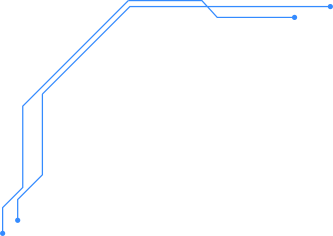
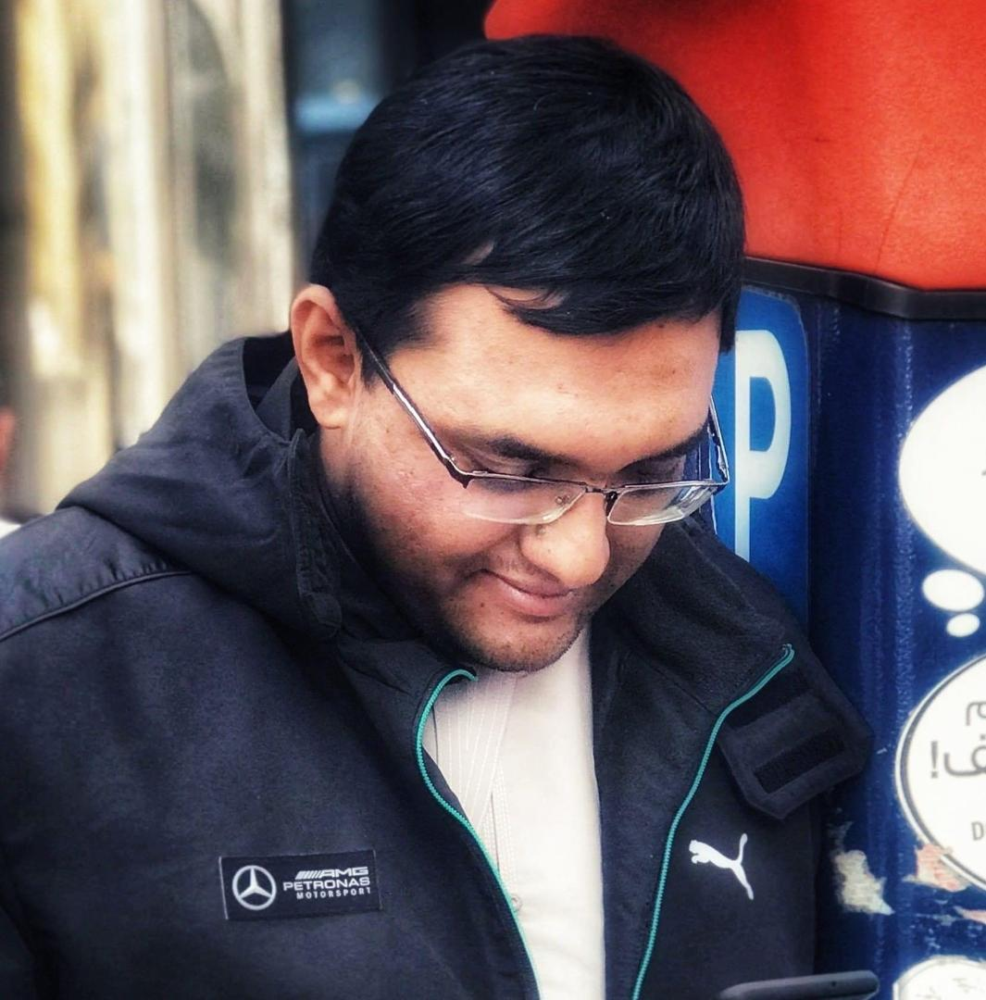
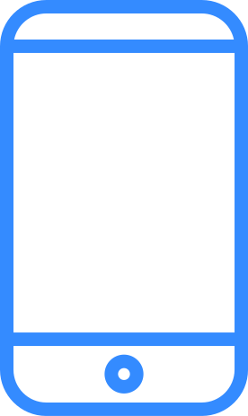
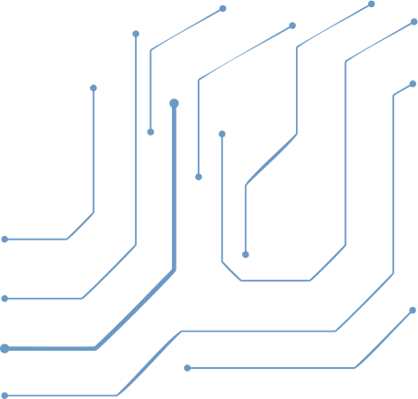
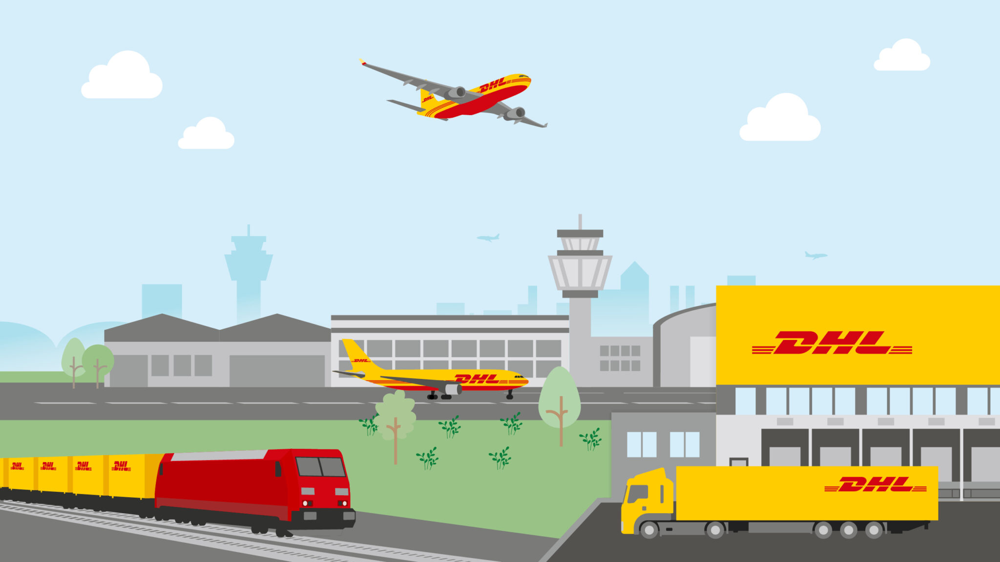
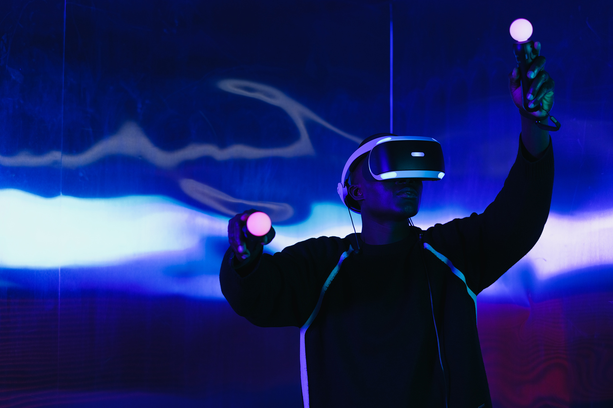
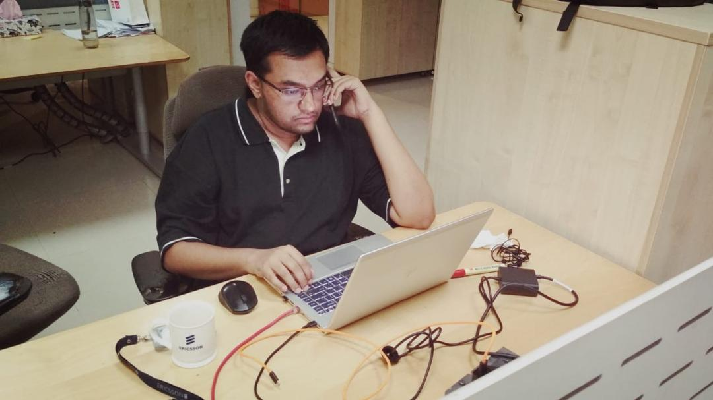

RF & RAN Intelligence
Translate radio measurements, KPIs and network behavior into explainable engineering actions.
Building intelligent, secure and future-ready platforms across telecom networks, digital twins and applied software engineering.

I am an RF and RAN consultant with more than twelve years of experience across GSM, WCDMA, LTE and 5G NR.
My work spans radio solution design, planning, integration, modernization, optimization and advanced back-office support for major operators across EMEA, APAC and the Americas.
Alongside telecom delivery, I build AI, digital-twin and software prototypes that turn complex operational data into clearer engineering decisions.

Translate radio measurements, KPIs and network behavior into explainable engineering actions.
Deliver 5G/LTE integration, OSS migration, IP-RAN modernization and multi-vendor change.

Prototype unified operational workflows, intelligent automation and live network representations.

Build practical web and mobile systems with API, cloud, data and security foundations.
Nationwide RAN operations, 3G rollout, LTE trials and multi-vendor transformation.
RAN design, integration, optimization and IP solutions across major EMEA programs.
5G/LTE consulting, ENM/OSS migration, DSS trials and advanced back-office delivery.
Expanded into software engineering, network intelligence and data-driven prototypes.
Advancing a unified AI-driven RAN operations platform through final-year research.
Cloud and networking credentials backed by public, issuer-verified digital badges.
CLF-C02 · Expires August 2029
SAA-C03 · Expires August 2029
Cisco Networking Academy · Issued July 2025
Cisco Networking Academy · Issued August 2021
Five platforms at the intersection of telecom operations, artificial intelligence, fintech security, workflow automation and sustainable software.
A final-year platform concept for unifying RAN operational data, live digital-twin state and AI-assisted analysis.
View Project →Strong authentication, transaction authorization, tamper-evident records and blockchain anchoring concepts.
View Project →
A secured incident workflow for intake, review, search and automated ingestion through UiPath.
View Project →A sustainability web system covering public content, authentication, evaluation, scoring, feedback and reporting.
View Project →
Transforms RF measurements into model comparison, engineering interpretation and optimization guidance.
View Project →Available for RF/RAN consulting, telecom transformation, intelligent operations platforms and technical collaboration.
